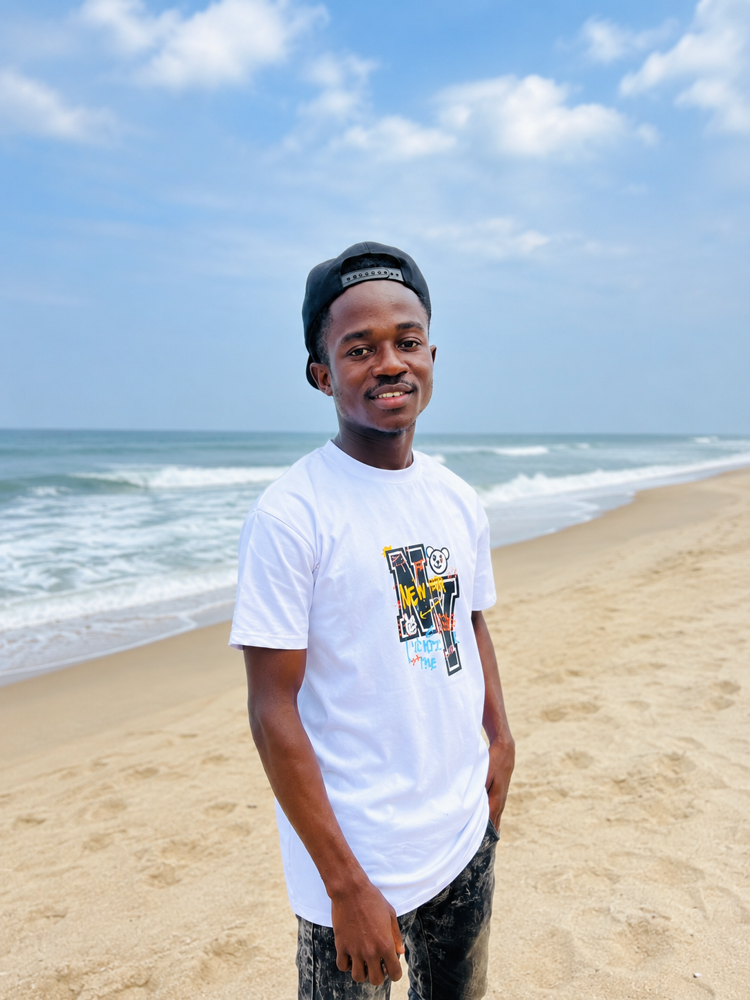
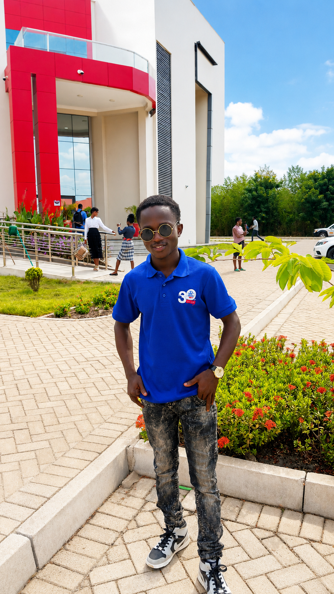

Why Education Should Create Opportunities
Exploring the connection between education, skills, work, and the opportunities available to young people.
Thinking deeply. Creating freely. Sharing ideas.


I’m Nketia-Marfo. This is my personal space for sharing ideas, stories, projects, and perspectives on education, economics, music, society, and opportunities.
I’m curious about how ideas become opportunities and how people can use knowledge and creativity to make a difference.
Exploring the connection between education, skills, work, and the opportunities available to young people.
Thinking about how creativity and music can become meaningful opportunities.
Have an idea, question, or topic you'd like to discuss? I'd love to hear from you.